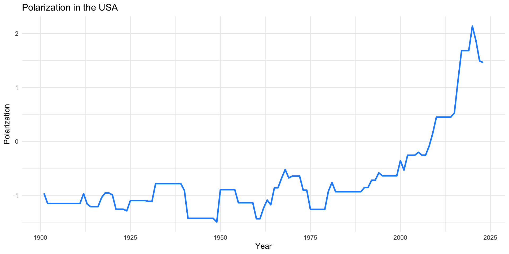
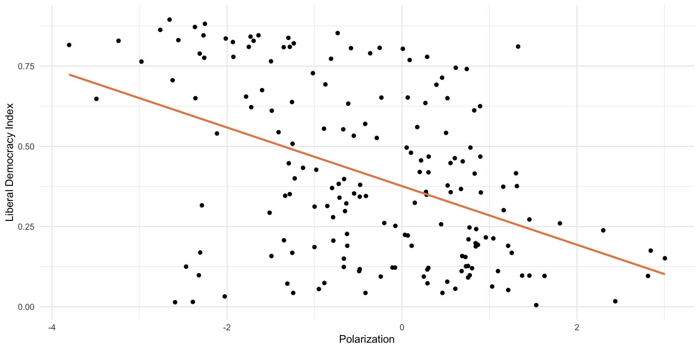
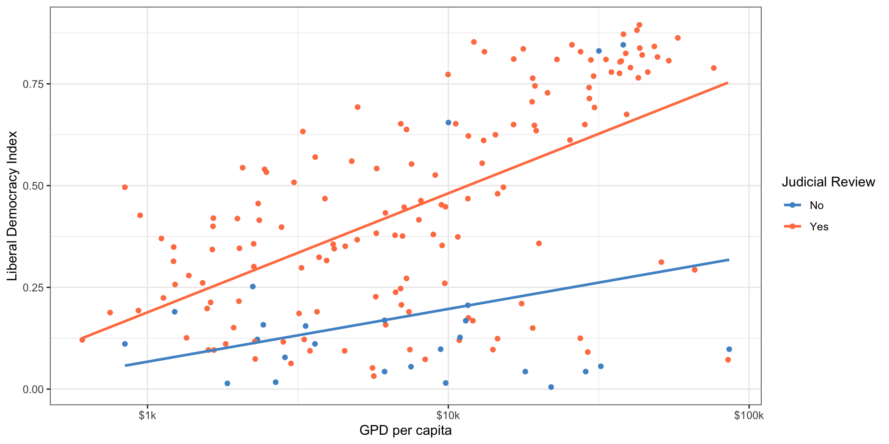

Multiple Regression
February 7, 2025
Load packages
Load VDEM Data
model_data <- vdem |>
filter(year == 2006) |>
select(country_name,
libdem = v2x_libdem,
wealth = e_gdppc,
oil_rents = e_total_oil_income_pc,
polarization = v2cacamps,
corruption = v2x_corr,
judicial_review = v2jureview_ord,
region = e_regionpol_6C,
regime = v2x_regime) |>
mutate(
region = factor(
region,
labels=c("Eastern Europe",
"Latin America",
"MENA",
"SSAfrica",
"Western Europe and North America",
"Asia and Pacific"))
)
glimpse(model_data)Linear Model with Multiple Predictors
- Previously, we were interested in GDP per capita as a predictor of democracy
- Now, let’s consider another predictor: polarization (also measured by V-Dem)
Polarization Measure in the USA
Polarization and Democracy in 2006
Model with One Predictor
library(broom) # for tidy() function
lm(libdem ~ polarization, data = model_data) |>
tidy() # for nicer regression output# A tibble: 2 × 5
term estimate std.error statistic p.value
<chr> <dbl> <dbl> <dbl> <dbl>
1 (Intercept) 0.376 0.0187 20.1 2.66e-47
2 polarization -0.0914 0.0139 -6.58 5.30e-10Significance?
Model with Two Predictors
Model with Two Predictors
\[ \hat{Y_i} = a + b_1*Polarization + b_2*GDPpc \]
\[ \hat{Y_i} = 0.18 + -0.05*Polarization + 0.10*GDPpc \]
Model with Two Predictors
\[ \hat{Y_i} = a + b_1*Polarization + b_2*GDPpc \]
\[ \hat{Y_i} = 0.18 + -0.05*Polarization + 0.10*GDPpc \]
\(a\) is the predicted level of Y when BOTH GDP per capita and polarization are equal to 0
Model with Two Predictors
\[ \hat{Y_i} = a + b_1*Polarization + b_2*GDPpc \]
\[ \hat{Y_i} = 0.18 + -0.05*Polarization + 0.10*GDPpc \]
- \(b_1\) is the impact of a 1-unit change in polarization on the predicted level of Y, holding GDP per capita fixed (all else equal)
- The relationship between polarization and democracy, controlling for wealth
Model with Two Predictors
\[ \hat{Y_i} = a + b_1*Polarization + b_2*GDPpc \]
\[ \hat{Y_i} = 0.18 + -0.05*Polarization + 0.10*GDPpc \]
- \(b_2\) is the impact of a 1-unit change in GDP per capita on the predicted level of Y, holding polarization fixed (all else equal)
- The relationship between wealth and democracy, controlling for polarization
Model with Two Predictors
\[ \hat{Y_i} = a + b_1*Polarization + b_2*GDPpc \]
- OLS is searching for combination of \(a\), \(b_1\), and \(b_2\) that minimize sum of squared residuals
- Same logic as model with one predictor, just more complicated
Model with Three Predictors
\[ \hat{Y_i} = a + b_1*Polarization + b_2*GDPpc + b_3*OilRents \]
Model with Three Predictors
# A tibble: 4 × 5
term estimate std.error statistic p.value
<chr> <dbl> <dbl> <dbl> <dbl>
1 (Intercept) 0.153 0.0317 4.82 3.30e- 6
2 polarization -0.0577 0.0128 -4.50 1.32e- 5
3 log(wealth) 0.131 0.0150 8.72 3.65e-15
4 oil_rents -0.0000413 0.00000607 -6.80 1.98e-10Model with Three Predictors
\[ \hat{Y_i} = a + b_1*Polarization + b_2*GDPpc + b_3*OilRents \]
\[ \hat{Y_i} = a + -.05*Polarization + .13*GDPpc + .00004*OilRents \]
Your Turn!
- In the last session, you examined levels of democracy and corruption
- Now, let’s fit a multiple regression model predicting corruption with two predictors: democracy (libdem) and polarization (polarization)
- Then, interpret the coefficients
- Estimate a second multiple regression model that adds in GDP per capita (lg_gdppc)
- Interpret the coefficients
- What happens to the coefficients of the other variables when we add GDP per capita to the model?
- Why do you think this happens?
- Try adding in additional predictors if there is time
10:00
Model 1
Model 2 - Adding GDP per capita
# A tibble: 4 × 5
term estimate std.error statistic p.value
<chr> <dbl> <dbl> <dbl> <dbl>
1 (Intercept) 0.962 0.0278 34.6 1.25e-78
2 libdem -0.618 0.0574 -10.8 6.40e-21
3 polarization 0.0298 0.0108 2.75 6.66e- 3
4 log(wealth) -0.0864 0.0125 -6.89 1.07e-10Categorical Variables
What is a Categorical Variable?
- A variable that represents distinct groups or categories
- Categories can be named (e.g., “Male” or “Female”)
- Or numbered (e.g., 1, 2, 3)
- Or words (like different regions)
- Can be either nominal (unordered) or ordinal (ordered)
- Also called “dummy variables” or “indicator variables”
What is a Factor in R?
- A data structure used to represent categorical variables
- Can be dichotomous (binary) or have multiple levels
- Supports both ordered and unordered categories
- Call
factor()to convert a variable to a factor - Call
levels()to see the categories
Reference Categories
- In a regression model, every categorical variable needs a reference category
- The reference category is the category that all other categories are compared to when interpreting the results
- Call
relevel()to change the reference category
Judicial Review and Democracy
Judicial Review:
- Do high courts (Supreme Court, Constitutional Court, etc) have the power to rule on whether laws or policies are constitutional/legal? (Yes or No)
- Dimension of Judicial Independence
Judicial Review and Democracy
Judicial Review and Democracy
Judicial Review and Democracy
\[ \widehat{Democracy_{i}} = 0.17 + 0.28*JudicialReview(yes) \]
- Slope: countries with judicial review are expected, on average, to be 0.28 units more democratic on the liberal democracy index
- Compares baseline level (Judicial Review = 0) to the other level (Judicial Review = 1)
- Intercept: average democracy score of countries without judicial review
- Average democracy score of countries with judicial review is 0.17 + 0.28 = 0.45
Dummy Variables
- When the categorical explanatory variable has many levels, they’re encoded to dummy variables
- We always leave one category out of the model, as the omitted reference category
- Each coefficient describes is the expected difference between level of the factor and the baseline level
- Everything is relative to the omitted reference category
Democracy and World Region
- Does region predict levels of democracy?
- Since Eastern Europe is the first category, default in R is to use that as the omitted category in models.
Democracy and World Region
How should we interpret intercept? How about the coefficient on Latin America?
# A tibble: 6 × 5
term estimate std.error statistic p.value
<chr> <dbl> <dbl> <dbl> <dbl>
1 (Intercept) 0.434 0.0361 12.0 1.41e-24
2 regionLatin America 0.0664 0.0535 1.24 2.16e- 1
3 regionMENA -0.236 0.0571 -4.13 5.63e- 5
4 regionSSAfrica -0.139 0.0456 -3.06 2.61e- 3
5 regionWestern Europe and North America 0.376 0.0541 6.94 7.84e-11
6 regionAsia and Pacific -0.134 0.0519 -2.57 1.09e- 2Democracy and World Region
What if you want a different baseline category? How do we interpret now?
# make SS Africa the reference category
model_data <- model_data |>
mutate(newReg = relevel(region, ref=4))
lm(libdem ~ newReg, data = model_data) |>
tidy()# A tibble: 6 × 5
term estimate std.error statistic p.value
<chr> <dbl> <dbl> <dbl> <dbl>
1 (Intercept) 0.295 0.0279 10.6 2.24e-20
2 newRegEastern Europe 0.139 0.0456 3.06 2.61e- 3
3 newRegLatin America 0.206 0.0484 4.25 3.47e- 5
4 newRegMENA -0.0962 0.0523 -1.84 6.74e- 2
5 newRegWestern Europe and North America 0.515 0.0491 10.5 3.36e-20
6 newRegAsia and Pacific 0.00582 0.0466 0.125 9.01e- 1Your Turn
Which types of regime have more corruption?
V-Dem also includes a categorial regime variable: Closed autocracy (0), Electoral Autocracy (1), Electoral Democracy (2), Liberal Democracy (3)
Your Turn
Which types of regime have more corruption?
First, let’s make this an easier factor variable to work with.
# Make nicer regime factor variable
model_data <- model_data |>
mutate(regime = factor(regime,
labels = c("Closed Autocracy",
"Electoral Autocracy",
"Electoral Democracy",
"Liberal Democracy")))
levels(model_data$regime)[1] "Closed Autocracy" "Electoral Autocracy" "Electoral Democracy"
[4] "Liberal Democracy" Your Turn
Which types of regime have more corruption?
- Filter data to include only the year 2019 (or run the code to use model_data)
- Make a plot to visualize the relationship between regime type and level of corruption. - Which kind of plot is best in this situation?
- Fit a linear model
- Interpret the intercept and coefficients
10:00
Visualization

Model
# A tibble: 4 × 5
term estimate std.error statistic p.value
<chr> <dbl> <dbl> <dbl> <dbl>
1 (Intercept) 0.598 0.0397 15.1 2.81e-33
2 regimeElectoral Autocracy 0.151 0.0475 3.18 1.74e- 3
3 regimeElectoral Democracy -0.0606 0.0484 -1.25 2.11e- 1
4 regimeLiberal Democracy -0.469 0.0502 -9.35 4.46e-17Create Your Own Model
- What is a theory that you would like to test with V-Dem data?
- What is the dependent variable?
- What are the independent variables?
- Map out steps to wrangle the data and fit a regression model
- What do you expect to find?
- Now go ahead and wrangle the data
- Fit the model
- Interpret the coefficients and their significance
- Did the results match your expectations?